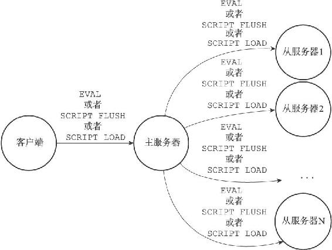
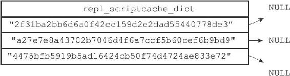
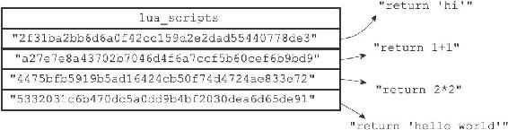

20.6 脚本复制
与其他普通Redis命令一样，当服务器运行在复制模式之下时，具有写性质的脚本命令也会被复制到从服务器，这些命令包括EVAL命令、EVALSHA命令、SCRIPT FLUSH命令，以及SCRIPT LOAD命令。
接下来的两个小节将分别介绍这四个命令的复制方法。
20.6.1 复制EVAL命令、SCRIPT FLUSH命令和SCRIPT LOAD命令
Redis复制EVAL、SCRIPT FLUSH、SCRIPT LOAD三个命令的方法和复制其他普通Redis命令的方法一样，当主服务器执行完以上三个命令的其中一个时，主服务器会直接将被执行的命令传播（propagate）给所有从服务器，如图20-9所示。

图20-9 将脚本命令传播给从服务器
1.EVAL
对于EVAL命令来说，在主服务器执行的Lua脚本同样会在所有从服务器中执行。
举个例子，如果客户端向主服务器执行以下命令：
redis> EVAL "return redis.call('SET', KEYS[1], ARGV[1])" 1 "msg" "hello world"
OK
那么主服务器在执行这个EVAL命令之后，将向所有从服务器传播这条EVAL命令，从服务器会接收并执行这条EVAL命令，最终结果是，主从服务器双方都会将数据库"msg"键的值设置为"hello world"，并且将脚本：
"return redis.call('SET', KEYS[1], ARGV[1])"
保存在脚本字典里面。
2.SCRIPT FLUSH
如果客户端向主服务器发送SCRIPT FLUSH命令，那么主服务器也会向所有从服务器传播SCRIPT FLUSH命令。
最终的结果是，主从服务器双方都会重置自己的Lua环境，并清空自己的脚本字典。
3.SCRIPT LOAD
如果客户端使用SCRIPT LOAD命令，向主服务器载入一个Lua脚本，那么主服务器将向所有从服务器传播相同的SCRIPT LOAD命令，使得所有从服务器也会载入相同的Lua脚本。
举个例子，如果客户端向主服务器发送命令：
redis> SCRIPT LOAD "return 'hello world'"
"5332031c6b470dc5a0dd9b4bf2030dea6d65de91"
那么主服务器也会向所有从服务器传播同样的命令：
SCRIPT LOAD "return 'hello world'"
最终的结果是，主从服务器双方都会载入脚本：
"return 'hello world'"
20.6.2 复制EVALSHA命令
EVALSHA命令是所有与Lua脚本有关的命令中，复制操作最复杂的一个，因为主服务器与从服务器载入Lua脚本的情况可能有所不同，所以主服务器不能像复制EVAL命令、SCRIPT LOAD命令或者SCRIPT FLUSH命令那样，直接将EVALSHA命令传播给从服务器。对于一个在主服务器被成功执行的EVALSHA命令来说，相同的EVALSHA命令在从服务器执行时却可能会出现脚本未找到（not found）错误。
举个例子，假设现在有一个主服务器master，如果客户端向主服务器发送命令：
master> SCRIPT LOAD "return 'hello world'"
"5332031c6b470dc5a0dd9b4bf2030dea6d65de91"
那么在执行这个SCRIPT LOAD命令之后，SHA1值为5332031c6b470dc5a0dd9b4bf2030dea6d65de91的脚本就存在于主服务器中了。
现在，假设一个从服务器slave1开始复制主服务器master，如果master不想办法将脚本：
"return 'hello world'"
传送给slave1载入的话，那么当客户端向主服务器发送命令：
master> EVALSHA "5332031c6b470dc5a0dd9b4bf2030dea6d65de91" 0
"hello world"
的时候，master将成功执行这个EVALSHA命令，而当master将这个命令传播给slave1执行的时候，slave1却会出现脚本未找到错误：
slave1> EVALSHA "5332031c6b470dc5a0dd9b4bf2030dea6d65de91" 0
(error) NOSCRIPT No matching script. Please use EVAL.
更为复杂的是，因为多个从服务器之间载入Lua脚本的情况也可能各有不同，所以即使一个EVALSHA命令可以在某个从服务器成功执行，也不代表这个EVALSHA命令就一定可以在另一个从服务器成功执行。
举个例子，假设有主服务器master和从服务器slave1，并且slave1一直复制着master，所以master载入的所有Lua脚本，slave1也有载入（通过传播EVAL命令或者SCRIPT LOAD命令来实现）。
例如说，如果客户端向master发送命令：
master> SCRIPT LOAD "return 'hello world'"
"5332031c6b470dc5a0dd9b4bf2030dea6d65de91"
那么这个命令也会被传播到slave1上面，所以master和slave1都会成功载入SHA1校验和为5332031c6b470dc5a0dd9b4bf2030dea6d65de91的Lua脚本。
如果这时，一个新的从服务器slave2开始复制主服务器master，如果master不想办法将脚本：
"return 'hello world'"
传送给slave2的话，那么当客户端向主服务器发送命令：
master> EVALSHA "5332031c6b470dc5a0dd9b4bf2030dea6d65de91" 0
"hello world"
的时候，master和slave1都将成功执行这个EVALSHA命令，而slave2却会发生脚本未找到错误。
为了防止以上假设的情况出现，Redis要求主服务器在传播EVALSHA命令的时候，必须确保EVALSHA命令要执行的脚本已经被所有从服务器载入过，如果不能确保这一点的话，主服务器会将EVALSHA命令转换成一个等价的EVAL命令，然后通过传播EVAL命令来代替EVALSHA命令。
传播EVALSHA命令，或者将EVALSHA命令转换成EVAL命令，都需要用到服务器状态的lua_scripts字典和repl_scriptcache_dict字典，接下来的小节将分别介绍这两个字典的作用，并最终说明Redis复制EVALSHA命令的方法。
1.判断传播EVALSHA命令是否安全的方法
主服务器使用服务器状态的repl_scriptcache_dict字典记录自己已经将哪些脚本传播给了所有从服务器：
struct redisServer {
// ...
dict *repl_scriptcache_dict;
// ...
};
repl_scriptcache_dict字典的键是一个个Lua脚本的SHA1校验和，而字典的值则全部都是NULL，当一个校验和出现在repl_scriptcache_dict字典时，说明这个校验和对应的Lua脚本已经传播给了所有从服务器，主服务器可以直接向从服务器传播包含这个SHA1校验和的EVALSHA命令，而不必担心从服务器会出现脚本未找到错误。

图20-10 一个repl_scriptcache_dict字典示例
举个例子，如果主服务器repl_scriptcache_dict字典的当前状态如图20-10所示，那么主服务器可以向从服务器传播以下三个EVALSHA命令，并且从服务器在执行这些EVALSHA命令的时候不会出现脚本未找到错误：
EVALSHA "2f31ba2bb6d6a0f42cc159d2e2dad55440778de3" ...
EVALSHA "a27e7e8a43702b7046d4f6a7ccf5b60cef6b9bd9" ...
EVALSHA "4475bfb5919b5ad16424cb50f74d4724ae833e72" ...
另一方面，如果一个脚本的SHA1校验和存在于lua_scripts字典，但是却不存在于repl_scriptcache_dict字典，那么说明校验和对应的Lua脚本已经被主服务器载入，但是并没有传播给所有从服务器，如果我们尝试向从服务器传播包含这个SHA1校验和的EVALSHA命令，那么至少有一个从服务器会出现脚本未找到错误。

图20-11 lua_scripts字典
举个例子，对于图20-11所示的lua_scripts字典，以及图20-10所示的repl_scriptcache_dict字典来说，SHA1校验和为：
"5332031c6b470dc5a0dd9b4bf2030dea6d65de91"
的脚本：
"return 'hello world'"
虽然存在于lua_scripts字典，但是repl_scriptcache_dict字典却并不包含校验和"5332031c6b470dc5a0dd9b4bf2030dea6d65de91"，这说明脚本：
"return 'hello world'"
虽然已经载入到主服务器里面，但并未传播给所有从服务器，如果主服务器尝试向从服务器发送命令：
EVALSHA "5332031c6b470dc5a0dd9b4bf2030dea6d65de91" ...
那么至少会有一个从服务器遇上脚本未找到错误。
2.清空repl_scriptcache_dict字典
每当主服务器添加一个新的从服务器时，主服务器都会清空自己的repl_scriptcache_dict字典，这是因为随着新从服务器的出现，repl_scriptcache_dict字典里面记录的脚本已经不再被所有从服务器载入过，所以主服务器会清空repl_scriptcache_dict字典，强制自己重新向所有从服务器传播脚本，从而确保新的从服务器不会出现脚本未找到错误。
3.EVALSHA命令转换成EVAL命令的方法
通过使用EVALSHA命令指定的SHA1校验和，以及lua_scripts字典保存的Lua脚本，服务器总可以将一个EVALSHA命令：
EVALSHA
[key ...] [arg ...]
转换成一个等价的EVAL命令：
EVAL